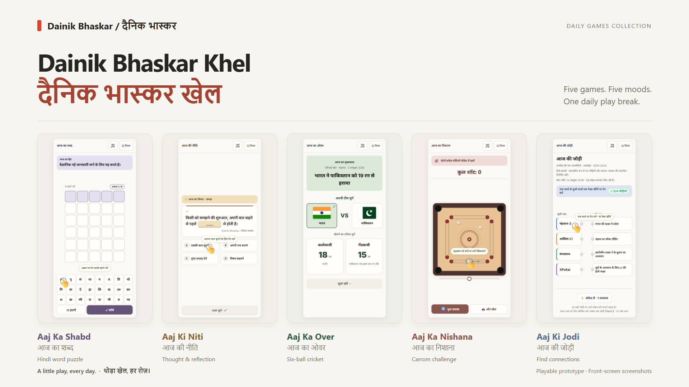
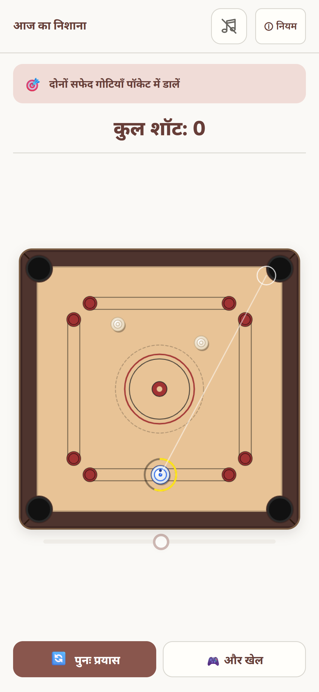

Dainik Bhaskar Khel / दैनिक भास्कर खेल
A little play, every day. / थोड़ा खेल, हर रोज़।
A collection of five games designed to make play a daily habit for Indian audiences, with something for different moods, moments, and everyday situations.
Open experience title & copyEnglish copy, Hindi interface captures, and a front-screen cover for each of the five current games.
Aaj Ka Shabd / आज का शब्द
Tagline
A little hint. A new word. A daily discovery.
Description
Guess the Hindi word using clues and colour hints.
How to play
Read the clue and fill five boxes using the on-screen letter groups. Tap Check, then use green, yellow, and grey feedback to improve your next guess. Find the word within six attempts.
Open text fileDownload front-screen coverAaj Ki Niti / आज की नीति
Tagline
Complete a thought. Carry it into your day.
Description
Complete a thoughtful phrase and share its personalised card.
How to play
Read the unfinished thought, choose one of four answers, and check your choice. Read the completed thought and its meaning. Add a name to its card, then download or share it if you like.
Open text fileDownload front-screen coverAaj Ka Over / आज का ओवर
Tagline
Six balls. One challenge. Your moment.
Description
Chase or defend a cricket target in six balls.
How to play
Pick a team and choose batting or bowling. When batting, swipe toward your shot as the ball reaches the green timing mark. When bowling, choose a spot on the pitch and release. Chase or defend the target within six balls; two wickets end the innings.
Open text fileDownload front-screen coverAaj Ka Nishana / आज का निशाना
Tagline
A familiar board. A fresh target.
Description
Aim, strike, and pocket coins in a Carrom challenge.
How to play
Read the target above the board. Move the striker along the bottom line, pull back to aim and set power, then release. Keep taking shots until you complete the target; every shot counts.
Open text fileDownload front-screen cover Front screen · cover
Front screen · cover How to play
How to play
Aiming and setting shot powerBoard after a released shotAaj Ki Jodi / आज की जोड़ी
Tagline
Find the pairs. Discover the bigger picture.
Description
Match related facts and discover the connections behind them.
How to play
Read both columns and tap one card, then its related partner in the other column. You can also drag a line between them. Match all four pairs, then explore the explanations and related stories.
Open text fileDownload front-screen cover